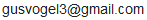

ServiceNow
2 promotions over 5 years.
I build games and real-time graphics. Lately: a solo-developed multiplayer tactics game on Steam, and an HD remake of a flash-era classic.
Experience
2 promotions over 5 years.
Data visualization (labelling) tool for driving footage QA.
Education
2026
Simultaneous planning game where you drag to position your fighter planes then watch them fly against an opponent.
18k wishlists and growing
Daily playtesters
2024
I remade the classic web game for modern PCs and web using Unity. Features improved controls, bugfixes, fullscreen responsive pixel UI. I reimagined the old static background art as real-time 3D scenes (see video).
My goal was to release a full game using Unity and to make this flash-era game more easily playable for the community. The remake has been well received and played by thousands.
Play free on itch.io2018
Custom 3D game engine and networked multiplayer game made in 10 weeks. This was still early in my graphics career so I was self-learning most of these concepts for the first time. I contributed the majority of 3D graphics and a lot of gameplay code. Features Splatoon-like gameplay with collaborative texture painting over the network.
My contributions
This was an uninstructed team project in the last quarter at UCSD. I'm proud of this game because it is fun and achieves a certain look, given our time constraint and limited knowledge at the time. Not to mention doing 3D models/texture assets myself. We did a good job of scoping our work for the time available so we were never caught without critical features or with an unstable or unperformant build.
2019
Can paint over the network and the core gameplay mechanics of tilling, seeding, and watering are in place. Mostly an experiment to learn multiplayer programming and learning Unreal Engine.
2018–2023
